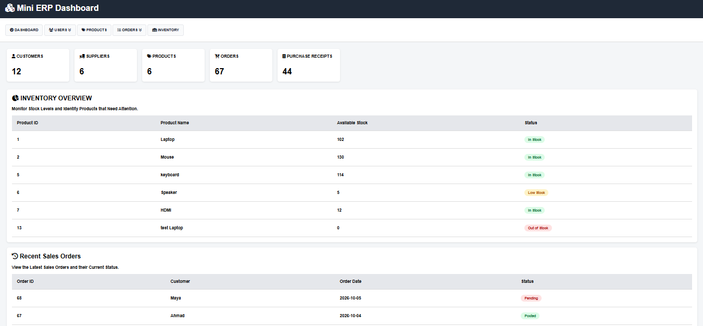
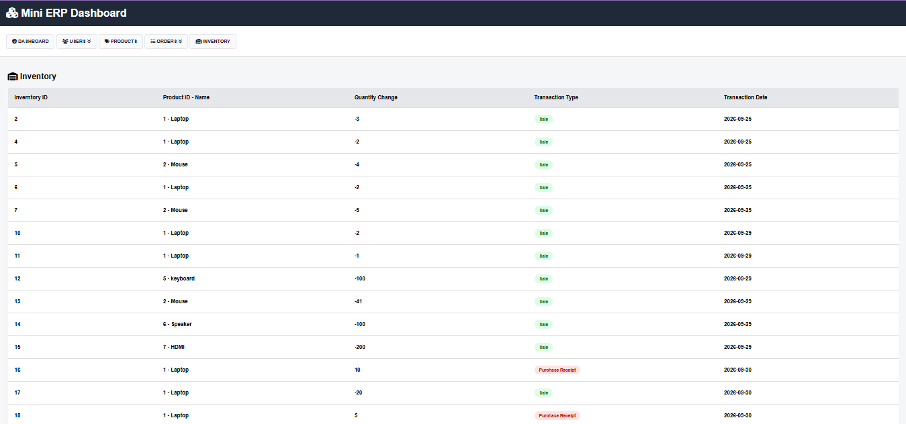

Project Screenshots




A full-stack ERP project inspired by common Microsoft Dynamics 365 Business Central processes.
This project is a full-stack ERP-style application designed to manage customers, vendors, products, inventory, sales orders, purchase orders, and inventory transactions.
The project focuses not only on software development, but also on understanding and implementing common ERP business processes.
Create, view, update and manage customer information.
Manage vendors and their product relationships.
Track stock quantities and inventory transactions.
Create sales orders and manage fulfillment and posting.
Create and receive purchase orders for inventory replenishment.
Detect insufficient inventory and handle partial fulfillment and replenishment.
JSON is used to exchange data between the frontend and the REST API.
One of the main business scenarios implemented in the project is handling a sales order when there is not enough inventory.


This is a standalone ERP project inspired by Microsoft Dynamics 365 Business Central processes. It is not a Microsoft Dynamics 365 Business Central implementation.